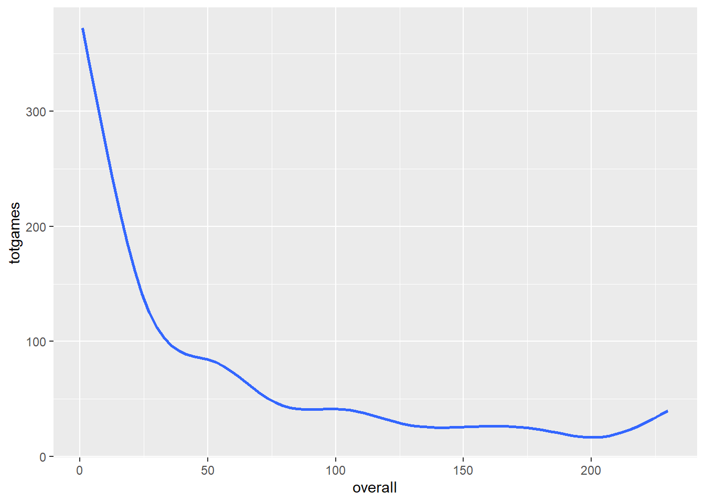
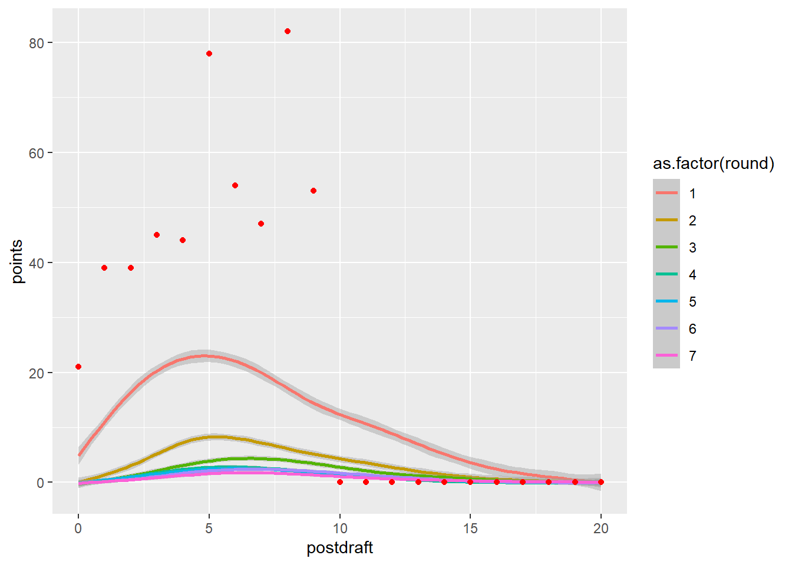
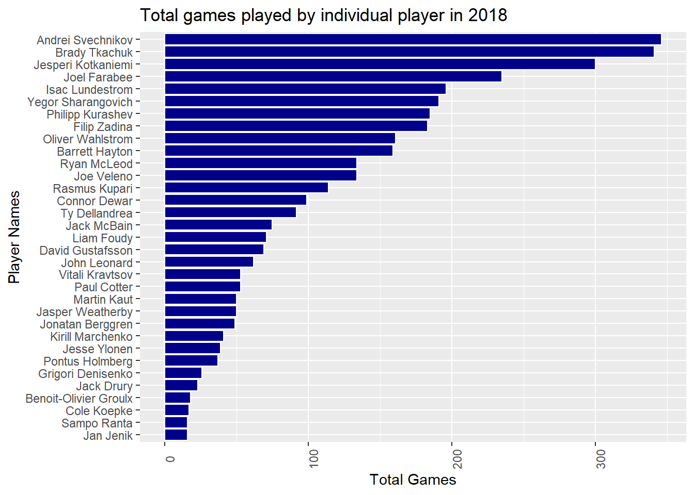
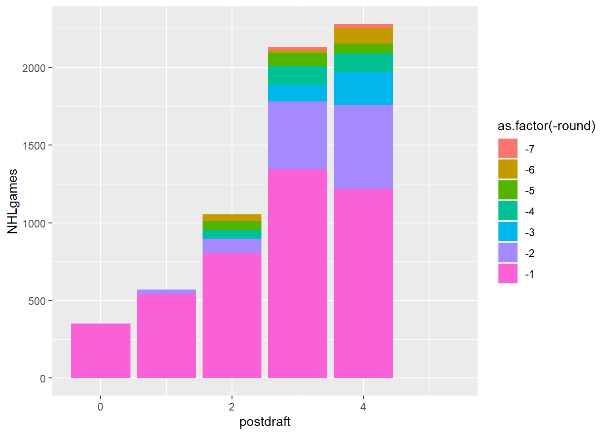
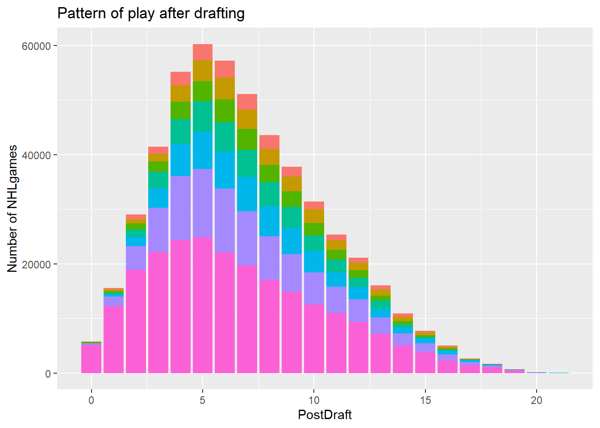

Figure1 : This figure shows the number of NHL games played by players drafted in June 2022, categorized by draft round. Each point represents a player, and jittering has been applied to reduce overplotting. The visualization highlights how most drafted players do not immediately play in the NHL
Expanded Scatterplot
Code
draft2018 <- NHLdraftstats %>%filter(draftyear ==2018& postdraft <6)ggplot(draft2018, aes(x = round, y = NHLgames, color = postdraft))+geom_point()
`summarise()` has grouped output by 'playerId', 'round', 'overall', 'position'.
You can override using the `.groups` argument.
Code
ggplot(drafttot, aes(x = overall, y = totgames))+geom_smooth(se =FALSE)
`geom_smooth()` using method = 'gam' and formula = 'y ~ s(x, bs = "cs")'

Average number of games played as a function
Code
NHLdraftstats <-read.csv("NHLdraftstats.csv")EL <- NHLdraftstats %>%filter(name =="Elias Lindholm")ggplot(NHLdraftstats %>%filter(position =="Forward"),aes(x = postdraft, y = points))+geom_smooth(aes(color =as.factor(round)))+geom_point(data = EL, aes(x = postdraft, y = points), color ="red")
`geom_smooth()` using method = 'gam' and formula = 'y ~ s(x, bs = "cs")'

Code
EL <- NHLdraftstats %>%filter(name =="Elias Lindholm")pick_31_range <- NHLdraftstats %>%filter()
Barplot
Code
drafttot2018 %>%filter(totgames >15& position =="Forward") %>%ggplot(aes( y =reorder(name, totgames), x = totgames))+geom_col(color ="white", fill ="blue4")+labs(title ="Total games played by individual player in 2018",y ="Player Names", x ="Total Games")+theme(axis.text.x =element_text(angle =90),legend.title =element_blank())

Stacked Bar Chart
Code
ggplot(draft2018, aes(x = postdraft, y = NHLgames, fill =as.factor(-round)))+geom_col(position ="stack")

Code
NHLdraft1 <- NHLdraft %>%mutate(descround =desc(as.factor(round)))rounds <-c("darkred", "blue", "red", "darkblue", "pink", "violet", "lightblue")ggplot(NHLdraft, aes(x = postdraft, y = NHLgames, fill =as.factor(-round)))+geom_col(position ="stack")+labs(title ="Pattern of play after drafting",x ="PostDraft",y ="Number of NHLgames")+theme(legend.position ="none")

Source Code
---title: "Assignment 5"subtitle: "NHL Draft Analysis"author: "Morjina Solaiman"date: "2025-03-03"categories: [Assignment, Dataviz]code-fold: truecode-tools: trueformat: html---## NHL Draft Analysis### Load the dataset and libraries```{r message=FALSE, warning=FALSE}library(dplyr)library(tidyverse)library(ggplot2)library(readxl)NHLdraft <- read.csv("NHLdraft.csv")NHLdraftstats <- read.csv("NHLdraftstats.csv")NHLdictionary <- read_xlsx("NHLDictionary.xlsx")```Visualization of games played by drafted player in 2022```{r}#| message: false#| warning: falsedraftNHL <- NHLdraftstats %>%select(name, round, overall, draftyear, position) %>%group_by(name, round, overall, draftyear, position)draft2022 <- NHLdraft %>%filter(draftyear ==2022& postdraft ==0)ggplot(draft2022, aes(x = round, y = NHLgames, color = overall))+geom_point()+geom_jitter(width =0.2, alpha =0.7, height =0.5)+labs(title ="NHL draft Analysis of 2022",x ="Hockey Games Round",y ="NHLgames")```Figure1 : This figure shows the number of NHL games played by players drafted in June 2022, categorized by draft round. Each point represents a player, and jittering has been applied to reduce overplotting. The visualization highlights how most drafted players do not immediately play in the NHL## Expanded Scatterplot```{r}#| message: false#| warning: falsedraft2018 <- NHLdraftstats %>%filter(draftyear ==2018& postdraft <6)ggplot(draft2018, aes(x = round, y = NHLgames, color = postdraft))+geom_point()``````{r}#| message: false#| warning: falsedrafttot2018 <- draft2018 %>%group_by(playerId,round, overall, position, name) %>%summarise(totgames =sum(NHLgames))ggplot(drafttot2018, aes(x = round, y = totgames))+geom_point()```## Scatterplot with overall draft position```{r}#| message: false#| warning: falseggplot(drafttot2018, aes(x = overall, y = totgames))+geom_point()```## Scatterplot summary```{r}#| message: false#| warning: falseggplot(drafttot2018, aes(x = overall, y = totgames))+geom_point()+geom_smooth()``````{r}#| message: false#| warning: falsedrafttot <- NHLdraft %>%filter(postdraft <8) %>%group_by(playerId, round, overall, position, name) %>%summarise(totgames =sum(NHLgames))ggplot(drafttot, aes(x = overall, y = totgames))+geom_smooth(se =FALSE)```Average number of games played as a function```{r}#| message: false#| warning: falseNHLdraftstats <-read.csv("NHLdraftstats.csv")EL <- NHLdraftstats %>%filter(name =="Elias Lindholm")ggplot(NHLdraftstats %>%filter(position =="Forward"),aes(x = postdraft, y = points))+geom_smooth(aes(color =as.factor(round)))+geom_point(data = EL, aes(x = postdraft, y = points), color ="red")``````{r}#| message: false#| warning: falseEL <- NHLdraftstats %>%filter(name =="Elias Lindholm")pick_31_range <- NHLdraftstats %>%filter()```## Barplot```{r}#| message: false#| warning: falsedrafttot2018 %>%filter(totgames >15& position =="Forward") %>%ggplot(aes( y =reorder(name, totgames), x = totgames))+geom_col(color ="white", fill ="blue4")+labs(title ="Total games played by individual player in 2018",y ="Player Names", x ="Total Games")+theme(axis.text.x =element_text(angle =90),legend.title =element_blank())```## Stacked Bar Chart```{r}#| message: false#| warning: falseggplot(draft2018, aes(x = postdraft, y = NHLgames, fill =as.factor(-round)))+geom_col(position ="stack")``````{r}#| message: false#| warning: falseNHLdraft1 <- NHLdraft %>%mutate(descround =desc(as.factor(round)))rounds <-c("darkred", "blue", "red", "darkblue", "pink", "violet", "lightblue")ggplot(NHLdraft, aes(x = postdraft, y = NHLgames, fill =as.factor(-round)))+geom_col(position ="stack")+labs(title ="Pattern of play after drafting",x ="PostDraft",y ="Number of NHLgames")+theme(legend.position ="none")```